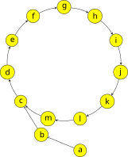

Fermat
本文讨论费马小定理、欧拉定理及其扩展．这些定理解决了任意模数下任意大指数的幂的计算问题．
费马小定理
费马小定理（Fermat's little theorem）是数论中最基础的定理之一．它也是 Fermat 素性测试 的理论基础．
???+ note "费马小定理" 设 $p$ 是素数．对于任意整数 $a$ 且 $p\nmid a$，都成立 $a^{p-1}\equiv 1\pmod p$.
???+ note "定理" 设 $p$ 是素数．对于任意整数 $a$，都成立 $a^{p}\equiv a\pmod p$.
这两个同余关系在 $p\nmid a$ 时是等价的；而在 $p\mid a$ 时，$a^p\equiv 0\equiv a\pmod p$ 平凡地成立．因此，这两个命题是等价的．这两个命题常常都称作费马小定理．
??? note "证明一" 设 $p$ 是素数，且 $p\nmid a$．首先证明：对于 $i=1,2,\cdots,p-1$，余数 $ia \bmod p$ 各不相同．反证法．如果有 $1\le i < j < p$ 使得
$$
ia \bmod p = ja \bmod p. \iff (j-i)a\equiv 0.\pmod p
$$
但是，$(j-i)$ 和 $a$ 都不是 $p$ 的倍数，这显然矛盾．
换句话说，这些余数是 $\{1,2,\cdots,p-1\}$ 的一个排列．因此，有
$$
\prod_{i=1}^{p-1}i = \prod_{i=1}^{p-1}(ia\bmod p) \equiv \prod_{i=1}^{p-1}ia = a^{p-1}\prod_{i=1}^{p-1}i.\pmod p
$$
这说明
$$
(a^{p-1}-1)\prod_{i=1}^{p-1}i \equiv 0. \pmod{p}
$$
也就是说，等式左侧是 $p$ 的倍数，但是 $i=1,2,\cdots, p-1$ 都不是 $p$ 的倍数，所以，只能有 $p\mid (a^{p-1}-1)$，亦即费马小定理成立．
??? note "证明二" 注意到费马小定理的第二种表述对于所有 $a\in\mathbf N$ 都成立，因此，可以考虑使用数学归纳法．负整数的情形容易转化为非负整数的情形．
归纳起点为 $0^p\equiv 0\pmod p$，显然成立．假设它对于 $a\in\mathbf N$ 成立，需要证明的是，它对于 $a+1$ 也成立．由二项式定理可知
$$
(a+1)^p=a^p+\binom{p}{1}a^{p-1}+\binom{p}{2}a^{p-2}+\cdots +\binom{p}{p-1}a+1.
$$
除了首尾两项，组合数的表达式 $\dbinom{p}{k} = \dfrac{p!}{k!(p-k)!}$ 中，$p$ 都能整除分子，而不能整除分母，因此，这些系数对于 $k\neq 0,p$ 都是 $p$ 的倍数．因此，有
$$
(a+1)^p \equiv a^p + 1\equiv a + 1. \pmod{p}
$$
其中，第二步应用了归纳假设．因此，利用数学归纳法可知，费马小定理成立．
费马小定理的逆命题并不成立．即使对于所有与 $n$ 互素的 $a$，都有 $a^{n-1}\equiv 1\pmod n$，那么，$n$ 也未必是素数．相关讨论详见 Fermat 素性测试 一节．
欧拉定理
欧拉定理（Euler's theorem）将费马小定理推广到了一般模数的情形，但仍然要求底数与指数互素．
???+ note "欧拉定理" 对于整数 $m>0$ 和整数 $a$，且 $\gcd(a,m)=1$，有 $a^{\varphi(m)}\equiv 1\pmod{m}$，其中，$\varphi(\cdot)$ 为 欧拉函数．
??? note "证明" 与费马小定理的证明一类似，仍然是取一个与 $m$ 互质的数列，再进行操作．考虑集合
$$
R = \{r\in\mathbf N : 0 < r < m,~\gcd(r,m)=1\}.
$$
这是模 $m$ 的 [既约剩余系](./basic.md#同余类与剩余系)．根据欧拉函数的定义可知，$|R|=\varphi(m)$．类似上文，将它们乘以 $a$ 相当于对该集合重新排列：
$$
R = \{ar\bmod m: r\in R\}.
$$
这是因为，容易验证 $\gcd(ar,m)=1$ 且不同的 $r_1,r_2\in R$ 对应的 $ar_1\bmod m$ 和 $ar_2\bmod m$ 也一定不同．因此，有
$$
\prod_{r\in R}r \equiv \prod_{r\in R}ar = a^{\varphi(m)}\prod_{r\in R}r. \pmod{m}
$$
再次重复之前的论证，消去 $\prod_{r\in R}r$，就得到 $a^{\varphi(m)}\equiv 1\pmod m$．
对于素数 $p$，有 $\varphi(p)=p-1$，因此，费马小定理是欧拉定理的一个特例．另外，欧拉定理中的指数 $\varphi(m)$ 在一般情形下并非使得该式成立的最小指数．它可以改进到 $\lambda(m)$，其中，$\lambda(\cdot)$ 是 Carmichael 函数．关于相关结论的代数背景，可以参考 整数同余类的乘法群 一节．
扩展欧拉定理
扩展欧拉定理^ex-euler进一步将结论推广到了底数与指数不互素的情形．由此，它彻底解决了任意模数下任意底数的幂次计算问题，将它们转化为指数小于 $2\varphi(m)$ 的情形，从而可以通过 快速幂 在 $O(\log\varphi(m))$ 时间内计算．
???+ note "扩展欧拉定理" 对于任意正整数 $m$、整数 $a$ 和非负整数 $k$，有
$$
a^k \equiv \begin{cases}
a^{k \bmod \varphi(m)}, &\gcd(a,m) = 1, \\
a^k, &\gcd(a,m)\ne 1, k < \varphi(m), \\
a^{(k \bmod \varphi(m)) + \varphi(m)}, &\gcd(a,m)\ne 1, k \ge \varphi(m).
\end{cases} \pmod m
$$
第二种情形是在说，如果 $k < \varphi(m)$，那么，就无需继续降幂，直接应用快速幂即可；而第三种和第一种情形的最大区别是，通过取余降幂之后，是否需要加上一项 $\varphi(m)$．当然，将第一种情形合并进入第二、三种情形也是正确的．
直观理解
在严格证明定理之前，可以首先直观理解定理的含义．

考虑余数 $a^k\bmod m$ 随着 $b$ 增大而变化的情况．由于余数的取值一定在区间 $[0,m)$ 内，而 $k$ 有无限多个．将 $a^k\bmod m \mapsto a^{k+1}\bmod m$ 看作这些余数结点之间的有向边．那么，一定可以构成如图所示的循环．
扩展欧拉定理说明，这些循环可能是纯循环（第一种情形）或者混循环（第二、三种情形）．纯循环中，没有结点存在两个前驱，而混循环中就会出现这样的情形．因此，对于一般的情况，只需要能够求出循环节的长度和进入循环节之前的长度，就可以利用这个性质进行降幂．
严格证明
本节给出扩展欧拉定理的严格证明．
??? note "证明" 首先说明，存在 $k_0\in\mathbf N$，使得整数 $a$ 和 $m':=\dfrac{m}{\gcd(a^{k_0},m)}$ 互素．为此，设 $\nu_p(n)$ 是整数 $n$ 的质因数分解中素数 $p$ 的幂次，那么，不妨取
$$
k_0 = \max\left\{\left\lceil\dfrac{\nu_p(m)}{\nu_p(a)}\right\rceil : \nu_p(a)>0\right\}.
$$
因为 $m$ 中所有和 $a$ 的公共素因子的幂次都已经包含在 $a^{k_0}$ 中，所以，$a$ 就与 $m$ 中剩下的因子 $m'=\dfrac{m}{\gcd(a^{k_0},m)}$ 互素．
进而，对 $k\ge k_0$ 考察同余关系
$$
b\equiv a^k. \pmod m
$$
由于 $\gcd(a^{k_0},m)=\gcd(a^k,m)\mid b$，所以，将等式两侧（包括模数）同时除以 $\gcd(a^{k_0},m)$，就有
$$
\dfrac{b}{\gcd(a^{k_0},m)} = \dfrac{a^{k_0}}{\gcd(a^{k_0},m)}\cdot a^{k-k_0}. \pmod{m'}
$$
此时，因为 $a$ 与模数 $m'$ 互素，可以直接应用欧拉定理，得到
$$
\dfrac{b}{\gcd(a^{k_0},m)} \equiv \dfrac{a^{k_0}}{\gcd(a^{k_0},m)}\cdot a^{(k-k_0)\bmod\varphi(m')}. \pmod{m'}
$$
因此，再将因子 $\gcd(a^{k_0},m)$ 乘回去，就得到
$$
b \equiv a^{k_0}\cdot a^{(k-k_0)\bmod\varphi(m')} = a^{k_0 + (k-k_0)\bmod\varphi(m')}. \pmod{m}
$$
这就得到了扩展欧拉定理的形式．式子说明，循环节的长度是 $\varphi(m')$，而进入循环节之前的长度为 $k_0$．
此处得到的参数比扩展欧拉定理中的更紧，但是相对来说，这些参数的计算并不容易．可以说明，这些参数可以放宽到扩展欧拉定理中的情形．首先，利用 [欧拉函数的表达式](./euler-totient.md) 可知，因为 $m'\mid m$，所以 $\varphi(m')\mid\varphi(m)$．也就是说，$\varphi(m)$ 也是它的循环节．其次，$k_0$ 也可以放宽到 $\varphi(m)$．这是因为对于所有 $m\in\mathbf N_+$ 和任意 $p\mid m$，都有
$$
\begin{aligned}
\varphi(m) &\ge \varphi(p^{\nu_p(m)}) = (p-1)p^{\nu_p(m)-1} \ge p^{\nu_p(m)-1} \\
&= (1+(p-1))^{\nu_p(m)-1} \ge 1 + (p-1)(\nu_p(m)-1) \\
&\ge 1 + (\nu_p(m)-1) = \nu_p(m).
\end{aligned}
$$
其中，第二行的不等式利用了二项式展开，并只保留常数项和一次项．因此，有
$$
k_0 \le \max\{\nu_p(m):p\in\mathbf P\}\le \varphi(m).
$$
这就完全证明了所述结论．
例题
本节通过一道例题展示扩展欧拉定理的一个经典应用——计算任意模数下的幂塔．幂塔（power tower）指形如 $A\uparrow(B\uparrow(C\uparrow(D\uparrow\cdots)))$ 的式子，其中，$\uparrow$ 是 Knuth 箭头记号，而 $A,B,C,D,\cdots$ 是一系列非负整数．
???+ example "Library Checker - Tetration Mod" $T$ 组测试．每组测试中，给定 $A,B,M$，求 $(A\uparrow\uparrow B)\bmod M$．其中，$A\uparrow\uparrow B$ 表示由 $B$ 个 $A$ 组成的幂塔．或者，形式化地，定义
$$
A \uparrow\uparrow B =
\begin{cases}
1 , & B = 0,\\
A\uparrow(A\uparrow\uparrow(B-1)), & B > 0.
\end{cases}
$$
规定 $0^0=1$．
??? note "解答" 利用 $A\uparrow\uparrow B$ 的定义，递归计算即可．要计算 $(A\uparrow\uparrow B)\bmod M$，只需要应用扩展欧拉定理，计算 $(A\uparrow\uparrow(B-1))\bmod\varphi(M)$．由于 $\varphi(\varphi(n)) \le n/2$ 对所有 $n\ge 2$ 都成立，所以，递归过程一定在 $O(\log M)$ 步内完成．由于需要应用扩展欧拉定理，所以需要区分当前的计算结果是否严格小于当前模数．为此，只需要在取余的时候多判断一步即可．另外，需要注意边界情况的处理．
??? note "参考代码"
cpp
--8<-- "docs/math/code/fermat/tetration.cpp"
习题
- Luogu P5091【模板】扩展欧拉定理
- Codeforces 906 D. Power Tower
- Luogu P3747 [六省联考 2017] 相逢是问候
- Luogu P4139 上帝与集合的正确用法
- Luogu P3934 [Ynoi Easy Round 2016] 炸脖龙 I
- Luogu P6736「Wdsr-2」白泽教育
参考资料与注释
- Fermat's little theorem - Wikipedia
- Euler's theorem - Wikipedia
- Hardy, Godfrey Harold, and Edward Maitland Wright. An introduction to the theory of numbers. Oxford university press, 1979.